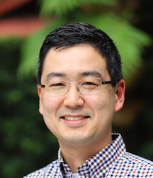

 I'm currently a machine learning engineer at Carbon Health building software to improve healthcare. More generally, I'm interested in how software, data and data analysis techniques can help improve things in the world.
My academic background is in physics. I obtained a Ph.D. from the Department of Physics at the Massachusetts Institute of Technology in the group of Professor Wolfgang Ketterle, working on ultracold rubidium atoms in optical lattices to study new phases of quantum matter. I obtained a B.A. from Cornell University majoring in physics and mathematics. While there I worked with Professor J. C. Séamus Davis on measuring gravity at submicron length scales, and Professor Anders Ryd on measuring the decay properties of D mesons to two kaon particles.